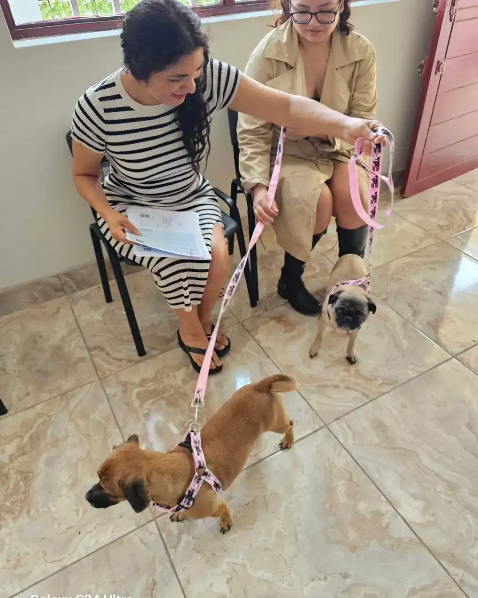

Export services · Short-nosed breeds
Cardio-respiratory assessment before flying (brachycephalic breeds)
A short nose is adorable, but it changes how your pet breathes. Before a flight, that has to be measured.
We assess your brachycephalic pet's heart and breathing before the trip, so they fly safely. If you have a bulldog, pug, Boston Terrier or a Persian cat, write to us.
Ask on WhatsApp
What it is and why it matters
Brachycephalic breeds —with short skulls and noses, like the bulldog, the pug, the Boston Terrier, the Shih Tzu or the Persian cat— are charming, but that very shape compresses their airways. This set of traits is called Brachycephalic Obstructive Airway Syndrome (BOAS). They breathe with more effort even at rest.
What we do
A complete cardio-respiratory assessment before approving the trip: electrocardiogram (the heart's electrical activity), echocardiogram (ultrasound of the heart in motion), complete blood count and blood biochemistry, plus the consultation that integrates everything and decides. The goal is not to deny the trip: it is to prepare it so your pet makes it safely.
Why flying demands more of them
Flying adds stress, heat and —in the hold— pressure changes. In a brachycephalic pet, whose airways are already compromised, that extra effort can trigger a severe respiratory crisis.1 That is why many airlines and destinations restrict these breeds, and air transport regulations for animals treat them with special care.2 Assessing beforehand protects your pet and avoids a surprise refusal at the airport. The full technical development is in our scientific series on the air transport of brachycephalic breeds, and in a lighter version we tell you about it in traveling with a pug and can my French bulldog fly?.
Brachycephalic syndrome (BOAS) from the inside (what makes it up)
- Stenotic nares (stenotic nares) — congenitally narrow nostrils that also collapse when inhaling.1
- Elongated soft palate — obstructs the entry of air toward the larynx.1
- Everted laryngeal saccules — tissue near the vocal cords that pulls inward when inhaling and blocks the passage of air.1
- Hypoplastic trachea — a trachea proportionally too narrow for the animal's size.1
Frequently affected breeds: English and French bulldog, pug, Boston Terrier, boxer, Pekingese, Shih Tzu, shar-pei, lhasa apso and, in cats, the Persian and the exotic. In them, heat and stress are risk factors that must be controlled.
When to do it
Before buying the ticket. The assessment tells you whether the trip is feasible, under what conditions and with what care, so you don't discover a problem on the day of the flight. Write to us with your pet's breed and destination.
Is your pet short-nosed and about to travel? We assess their heart and breathing beforehand, so they fly safely. Write to us with the breed and destination.
Ask on WhatsAppFrequently asked questions
Can my brachycephalic dog (bulldog, pug) travel by plane?
It depends on their cardio-respiratory assessment. These breeds have compromised airways and flying demands more of them, which is why several airlines and destinations restrict them. With an electrocardiogram, echocardiogram and lab work we assess their fitness and the care needed before giving you a responsible answer. All with evidence and in three languages: the technical study on the air transport of brachycephalic breeds and the guides traveling with a pug and can my French bulldog fly?.
What does the pre-flight assessment for short-nosed breeds include?
Electrocardiogram, echocardiogram, complete blood count and blood biochemistry, plus a consultation that integrates the results. The goal is to confirm that your pet is in a condition to face the flight safely and with what care.
Authored by us (we don't just follow the evidence: we produce it)
On this topic, our founders have published in open access (technical series with DOI): Transporte aéreo de perros braquicéfalos: riesgos fi… · Fisiología hipobárica en el transporte aéreo de perr…. Signed by Dr. Jessica Camacho (CMVP 12434) and Dr. Víctor Camacho (CMVP 3103).
References
- Cornell University College of Veterinary Medicine, Riney Canine Health Center. (2024). Brachycephalic Obstructive Airway Syndrome (BOAS). https://www.vet.cornell.edu/
- International Air Transport Association. (2024). Live Animals Regulations (LAR) — acceptance and welfare requirements for the air transport of snub-nosed (brachycephalic) breeds. IATA.
- Camacho García, J. Y., & Camacho Paz, V. J. (2025). Transporte aéreo de perros braquicéfalos: riesgos fisiológicos, factores de riesgo y marco regulatorio. Serie Técnica Zoovet Travel. https://doi.org/10.5281/zenodo.19243637
- Camacho García, J. Y. (2026). Fisiología hipobárica en el transporte aéreo de perros y gatos: presurización, oxígeno y respuesta fisiológica en vuelo comercial. Serie Técnica Zoovet Travel. https://doi.org/10.5281/zenodo.19243197